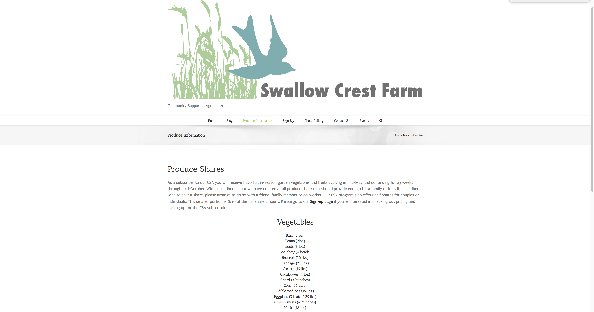

Forever Friends Animal Rescue
This page is dedicated to the Forever Friends Animal Rescue.
Here is a link to the Forever Friends Rescue project. This page is password protected; the password
is "password".
This was a fun project that involved learning about the Squarespace program. Creating this website was as easy
as following a recipe, maybe easier. Below I've included screenshots of the site as well as my sitemap. I used the "Moksha" template initially,
and customized the site myself using Squarespace's easy drag and drop design. Squarespace provides more than enough functionality for many organizations. For instance, a real pet rescue could create a
beautiful site to display their animals within just a couple hours using this site. Link to Forever Friends Rescue
Here's a link to the Screencast for the animal rescue. Screencast on Youtube
Swallow Crest Farm
Here's some information about the Swallow Crest Farm project.
